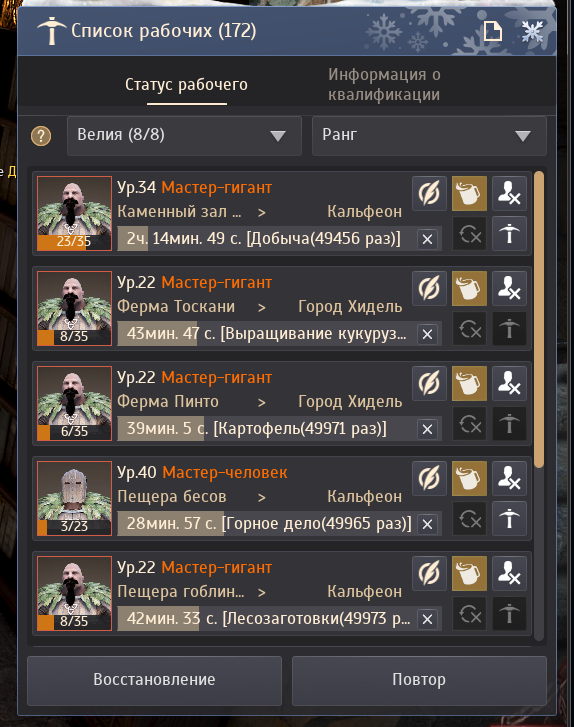

Рабочие автоматически добывают ресурсы и выполняют производство.
⚒ Рабочие
Автоматизация добычи ресурсов и производства.
Понять систему
Запустить рабочих
Связать узлы
World Data Layer · Worker Layer v0.1
👷 Атлас рабочих
Архивный слой для проверенных записей о рабочих и их будущих связях с городами, узлами, ресурсами и производством.
0 записей в коллекции
0 подтверждённых связей
v0.1 версия схемы
🏰 Город→🗺 Узел→🌲 Ресурс→👷 Рабочий→⚒ Производство→📦 Предмет
Verified records only
Архивные записи
Подтверждённых рабочих пока нет. Структура готова к безопасному наполнению.
Data policy
Только подтверждённые данные
Конкретные рабочие, характеристики, энергия, скорость, прибыль, время производства, задачи и связи не добавляются без отдельной проверки источников.
Быстрый ответ
📌 Кратко
Основная система строится вокруг подключённых узлов.
Рабочие тратят выносливость, которую нужно восстанавливать едой.
Для производства нужны город, склад, мастерская и подходящие материалы.
Чем лучше маршрут и рабочий, тем стабильнее поток ресурсов.
Зачем это нужно
Что такое рабочие
Рабочие превращают карту в экономическую систему
Ты нанимаешь рабочего в городе, подключаешь нужный узел и отправляешь его за ресурсами. Пока персонаж занимается другими делами, рабочий приносит материалы на склад.
Выбери город, откуда рабочий будет работать.
Найми рабочего и проверь его выносливость.
Подключи узлы вкладом очков влияния.
Отправь рабочего на добычу или производство.
Разбор интерфейса
Как читать окно рабочих
Наведи курсор на отмеченную область, чтобы узнать, за что она отвечает.

Фильтры «Город» и «Ранг»
Пример: Велия, Ранг
Позволяют быстро отобрать рабочих по городу и рангу.
Что важно запомнить
Для начала достаточно смотреть на четыре вещи: место работы, оставшееся время, выносливость и город рабочего.
Расширение команды
Как увеличить количество рабочих
Начни с бесплатного места, затем расширяй город через бараки и только после этого думай о магазине.
Один рабочий бесплатно
Каждый город предоставляет одно базовое бесплатное место для рабочего.
После найма первого рабочего для следующих нужны дополнительные места в бараках.
Бараки за очки влияния
Купи дом в нужном городе за очки влияния и измени его назначение на «Бараки».
- не требует жемчуга;
- использует обычную игровую механику;
- подходит новичкам;
- очки влияния можно вернуть, продав дом.
Расширение из Pearl Shop
Когда игровых возможностей уже не хватает, можно приобрести расширение бараков для нужного города.
- не расходует очки влияния;
- быстро увеличивает лимит;
- подходит для крупных сетей рабочих.
- 1 бесплатный рабочий
- Дом за очки влияния
- Назначение «Бараки»
- Дополнительные рабочие
- Магазин только при необходимости
Рост эффективности
⭐ Улучшение рабочих
Повышение рабочего позволяет получить более высокий ранг, улучшенные характеристики и сделать производство более эффективным.
Важно
Повышение ранга становится доступно только после достижения рабочим 40 уровня. До этого момента кнопка повышения недоступна.
Зачем улучшать
Что даёт повышение ранга
Более высокая скорость
Рабочий быстрее закрывает циклы добычи и производства.
Лучшие характеристики
С ростом ранга рабочий становится полезнее для важных задач.
Эффективная работа
Один сильный рабочий может заметно ускорить ключевую цепочку.
Ценные рабочие
Повышение помогает развивать уже найденных удачных рабочих.
Улучшение особенно заметно там, где рабочий постоянно занят: на древесине, руде, производстве и других повторяемых маршрутах.
Ранги
Схема повышения
- 1Новичок
- 2Ученик
- 3Профессионал
- 4Эксперт
- 5Мастер
Экзамен
Как происходит повышение
- Шаг 1Прокачать рабочего до 40 уровня
- Шаг 2Открыть список рабочих
- Шаг 3Выбрать рабочего
- Шаг 4Нажать кнопку «Повышение»
- Шаг 5Подтвердить начало экзамена
- Шаг 6Экзамен длится 8 часов
- Шаг 7Получить результат
Что происходит внутри
Экзамен на повышение
После подтверждения рабочий уходит на экзамен. Это не мгновенное действие, а отдельный игровой процесс.
8 часов ожидания
Экзамен длится 8 часов. До завершения результата не будет видно.
Шанс зависит от ранга
Вероятность повышения зависит от текущего ранга рабочего: чем выше ранг, тем ценнее успешный результат.
После успеха — новая прокачка
При успешном повышении уровень и навыки рабочего сбрасываются. После этого его нужно снова прокачивать.
Результат
Что происходит после экзамена
Успех
- рабочий повышает ранг;
- характеристики увеличиваются;
- уровень и навыки сбрасываются;
- рабочего нужно снова прокачивать.
Неудача
- рабочий остаётся прежнего ранга;
- не исчезает;
- расходуется одна попытка;
- если попытки остались, можно попробовать снова.
Механика экзамена
🎲 Попытки повышения
Каждый рабочий имеет ограниченное количество попыток повышения.
После 40 уровня
Рабочий может пройти экзамен на следующий ранг только после достижения 40 уровня.
Если экзамен не пройден
- рабочий остаётся прежнего ранга;
- расходуется одна попытка;
- если попытки ещё остались, экзамен можно повторить.
Если попытки закончились
- дальнейшее повышение этого рабочего становится невозможным;
- для нового шанса нужно нанять другого рабочего и снова прокачать его до 40 уровня.
- Рабочий
- 40 уровень
- Экзамен
- Успех
- Следующий ранг
- Неудача
- Минус одна попытка
- Есть попытки?
- Да → повторить экзамен
- Нет → нанять нового рабочего
- Снова прокачать до 40 уровня
Приоритет
Кого повышать первым
Рекомендуется сначала довести до 40 уровня рабочих, которые постоянно заняты в основных производственных цепочках. После этого можно постепенно отправлять их на экзамены повышения.
Порядок не универсален: он зависит от того, какие ресурсы и производства важнее именно для вашей сети.
🌲 добыча древесины
⛏ добыча руды
🏠 производство
Выбор под стиль игры
Какого рабочего выбрать?
В Black Desert нет универсального рабочего. Выбор зависит от вашего стиля игры.
Гиганты
Преимущества
- высокая выносливость;
- реже требуют восстановления;
- хорошо подходят для длительных маршрутов.
Недостаток
Более низкая скорость.
Подходят тем, кто играет спокойно и не хочет постоянно обслуживать сеть рабочих.
Гоблины
Преимущества
- высокая скорость;
- быстро выполняют задания.
Недостатки
- быстро расходуют выносливость;
- требуют более частого обслуживания.
Подходят активным игрокам.
Люди
Преимущества
- универсальные характеристики;
- хороший баланс.
Недостаток
Не являются лучшими ни по скорости, ни по выносливости.
Подходят тем, кто хочет универсальное решение.
Качество рабочего
Ранги рабочих
В Black Desert рабочие имеют несколько рангов. Чем выше ранг, тем лучше базовые характеристики рабочего и выше потенциал развития.
Рабочий
Начальный ранг. Подходит для старта игры.
Профессионал
Хороший универсальный вариант. Используется большинством игроков.
Эксперт
Высокие характеристики. Отличный выбор для постоянной сети рабочих.
Мастер
Максимальный обычный ранг рабочего. Требует успешного прохождения экзаменов повышения.
Навигация по списку
Фильтр рабочих
Фильтр помогает быстро найти рабочих нужного ранга, особенно если в городе уже большая сеть.
Все
Показывает всех рабочих.
Рабочий
Показывает только рабочих начального ранга.
Профессионал
Отображает только профессионалов.
Эксперт
Показывает только экспертов.
Мастер
Показывает только мастеров.
Этот фильтр особенно полезен, если в городе работает большое количество рабочих.
Параметр
Гоблин
Человек
Гигант
Скорость
★★★★★
★★★☆☆
★★☆☆☆
Выносливость
★★☆☆☆
★★★☆☆
★★★★★
Частота обслуживания
часто
средне
редко
Подходит новичкам
★★★☆☆
★★★★☆
★★★★☆
Подходит для большой сети
★★★☆☆
★★★☆☆
★★★★★
Практический выбор
🎮 Какой стиль игры подходит вам?
Заходите несколько раз в день
Попробуйте гоблинов: они быстро выполняют задания, если вы готовы чаще следить за выносливостью.
Играете вечером после работы
Обратите внимание на гигантов: их удобно оставлять на длинных маршрутах.
Только начинаете играть
Люди или гиганты станут спокойным выбором, пока вы разбираетесь с узлами и производством.
Процесс
Как работает система
- ⚡Энергия
- 🤝Найм
- 🌐Подключение узлов
- ⚒Работа
- 🌿Ресурсы
- 🏠Производство
Что можно делать
Возможности рабочих
Добыча дерева
Рабочие собирают древесину и побочные материалы с лесных узлов.
Руда
Подходят для стабильного запаса камня, металлов и редких ресурсов.
Растения
Помогают закрывать потребности кулинарии, алхимии и торговли.
Производство
Запускают обработку материалов в мастерских и домах города.
Имперские ящики
Готовят цепочки материалов для упаковки и сдачи имперке.
Пиво
Пиво и еда возвращают рабочим выносливость для новых задач.
Алхимия
Поставляют травы, порошки и базовые материалы для рецептов.
Личное пространство
📝 Мои заметки
Здесь позже появится место для личных наблюдений: города, узлы, рабочие, маршруты и удачные цепочки производства.
Стандарт BDO Wiki
❓ Частые вопросы
Можно ли иметь несколько рабочих?
Ответ будет добавлен позже.
Как восстановить выносливость?
Ответ будет добавлен позже.
Какого рабочего выбрать?
Ответ будет добавлен позже.
Почему рабочий не работает?
Ответ будет добавлен позже.